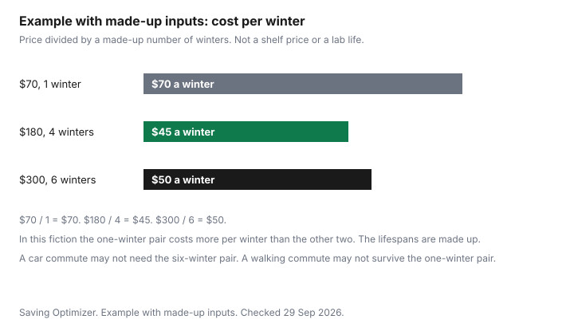

Clothing · Canada
Winter Boots in Canada on a Budget: Grip, Warmth and When Cheap Boots Cost More
A cheap winter boot that cracks in February is not the cheap option, and an expensive boot can be the wrong buy for a car commute that is thirty steps of sidewalk. This page is grip, water, fit, and cost per winter. There is no brand ranking and no named-product pick. Marks and Sport Chek homepages were opened 29 Sep 2026. No boot price or sole test was quoted from them. CSA-marked safety footwear is a workplace tool. It is mentioned only as a pointer, not as the boot for a dog walk.
Disclosure: Cash-back portal offers, Amazon.ca storefronts, and discounted retailer gift cards are offer types. Saving Optimizer may earn a commission if a partner link is added later. No partnership is claimed. None of those offers chooses a boot. Education only.
Key takeaways
- On a Canadian sidewalk the sole compound and the lug pattern matter more than a brand story. Ice, slush, and road salt are the conditions.
- A membrane and a surface treatment are different waterproofing claims. A removable liner helps only if you dry it.
- Fit the boot with the thick socks or orthotics you will wear. CCOHS's 12.5 mm toe-room note is for safety footwear, not a snow-boot size rule.
- Example with made-up inputs: $70 over one winter is $70 a winter. $180 over four winters is $45. $300 over six is $50. The lifespans are not test results.
- No resole price was opened. Ask whether the sole can be replaced before you treat a repair as the plan.
Sole grip and ice traction: what matters on Canadian sidewalks
The sidewalk is wet ice, packed snow, slush, and bare pavement with salt, often in the same block. A sole that is stiff in the cold does not bite. A lug that is deep can help in snow and can also pack with slush until it is smooth. Look at the compound and the pattern, and walk the boot on the store floor if that is all you can do. A real ice test is the first cold week, inside the return window on the return guide.
The Canadian Centre for Occupational Health and Safety fact sheet on safety footwear, last revised 2025-02-04, says footwear is also marked for slip resistance, and that the mark may be on the packaging, the footwear, or the product sheet. It points to CSA Standard Z195-14 (R2023) for protective footwear. That sheet is about workplace hazards: impact, puncture, electrical shock, and the rest of the symbols. It is not a warmth ranking for a fashion winter boot, and this page does not tell you to buy CSA boots for a commute unless your job requires them. Winter tires are the car's grip. They are on the tire guide. Salt on the vehicle is on the winter car guide.
Insulation, removable liners and waterproofing explained
Insulation is how the boot deals with cold. Waterproofing is how it deals with slush. A membrane is a layer that is supposed to block liquid water and still let some vapour out. A treated leather or a coating is a surface claim that wears off and may need the care product the label names. The two are not the same sentence. If the tag does not say which one you are paying for, you do not know.
A removable liner lets you dry the inside overnight and, sometimes, replace the liner when it packs down. It is a feature only if you will do that. A liner that stays wet inside a boot is how a "waterproof" pair still feels cold. No dollar premium for liners was opened.
| Check | What you are looking for | Fail |
|---|---|---|
| Traction | A sole compound meant for cold, and a lug that still touches the ground when it is not packed with slush | A smooth sole, or a lug you cannot picture on ice |
| Waterproofing | The tag says membrane or it says a surface treatment, and the care label matches that claim | "Waterproof" with no method, and no care line |
| Insulation and liners | You know whether the liner comes out, and whether a spare liner exists | A liner you cannot dry, sold as if it were insulation |
| Fit | Tried on with the socks or orthotics you will wear. Toes are not cramped. | A summer try-on, or a hope that leather will stretch. CCOHS says not to expect safety footwear to stretch. |
| Salt care | A care label you will follow, and a plan to wipe salt the day you wear them | No care label, and a home recipe this page will not invent |
Fit for thick socks and orthotics
Try the boots on with the socks you will wear in January, not with the thin socks you wore to the store. If you use orthotics, bring them. The CCOHS safety-footwear sheet says to try boots around midday, when feet have swollen, to leave about 12.5 mm between the toes and the front, to allow for extra socks or arch supports, and not to expect the footwear to stretch. It also says to check with the manufacturer if an insert affects the protection level. Those sentences are about protective footwear. Use the method for a winter boot: room for the sock, no promise of stretch. Do not treat 12.5 mm as a snow-boot regulation. A boot that is much too big is a trip, not a growth strategy. Kids' boots and that growth question are on the kids' winter gear guide.
Lace them. A heel that lifts is a blister and a wet sock. Walk long enough to feel the widest part of your foot. If the store will not let you do that, the return window is the rest of the fitting. Read it first.
Cost per season: budget vs mid-range vs premium boots
Example with made-up inputs. Three prices and three made-up lifespans, not a survey. A $70 pair that lasts one winter costs $70 a winter. A $180 pair that lasts four winters costs $45 a winter. A $300 pair that lasts six winters costs $50 a winter. In this fiction the one-winter pair is the most expensive per winter, and the six-winter pair is not automatically cheaper than the four-winter pair. A car commute that only needs the boots for a salted parking lot may never collect six winters of value from the $300 pair. A walking commute that destroys the $70 pair in February pays the $70 and then pays again.
The blank row is the quote in your hand and the winters you honestly expect. If you do not know the life, do not invent one to make the premium pair win. The chart uses the same three rows.
| Row | Price | Winters you assume | Cost per winter |
|---|---|---|---|
| Example, one winter | $70 | 1 | $70 |
| Example, four winters | $180 | 4 | $45 |
| Example, six winters | $300 | 6 | $50 |
| Your pair |

Resoling, liners and care to add winters
A resole adds winters only if the boot was built for it. Ask before you buy if that is your plan. This page has no cobbler price. A liner you can replace is the same question: is the part sold separately? Care is the care label. Wipe salt the day you wear the boots. Do not soak them on a radiator because a forum said so. The coat guide's repair point is the same shape: a written quote against replacement, on the coat page.
If the pair is safety footwear, CCOHS says to inspect for cracks, breaks, and exposed toe caps, and to replace footwear after a puncture or impact even when you cannot see the damage. That is the workplace sheet, not a reason to throw out a sidewalk boot after one salted week.
Timing: early-season selection vs clearance sizes
Early in the season the sizes are there and you can try the pair with winter socks. Clearance is what is left, which is how a "deal" becomes the wrong size. No clearance percent is stated. A price adjustment, if that retailer offers one, is how a November pair can meet a later ticket. Read the exclusions. The sale weekends themselves are on the Black Friday and Boxing Day guide.
Buy the boot your week needs. A premium pair for a car commute can be overkill. A one-winter pair for a walking commute can be the expensive one. The chart is the arithmetic. Your row is the decision.
Sources & date stamps
- CCOHS, Safety Footwear, fact sheet last revised 2025-02-04, checked 29 Sep 2026. CSA Z195-14 (R2023). Toe room about 12.5 mm. Try on around midday. Allowance for socks or orthotics. Do not expect stretch. Slip-resistance marks may be on the package, the footwear, or the product sheet. Cited as workplace footwear, not as a consumer warmth scale.
- Marks homepage and Sport Chek homepage, opened 29 Sep 2026. No boot price or sole-test result was quoted.
- Cost-per-winter rows are example arithmetic on made-up inputs.
Frequently asked questions
What makes a winter boot good on ice?
The sole you walk on: the compound and the lug pattern, on the sidewalk you actually use. A deep lug that clogs with slush is not the same as a sole that stays flexible in the cold. Slip-resistance marks on safety footwear are a workplace label, not a warmth grade for a sidewalk boot. This page has no brand ranking and no lab score for a named sole.
Are removable liners worth it?
They are worth it when you will take the liner out to dry it overnight and when a worn liner can be replaced instead of the whole boot. They are not worth it if the liner will stay in the boot and stay wet. No price premium for a liner was opened. Ask whether a replacement liner is sold before you pay extra for the feature.
How do I get salt stains off boots?
Follow the care label, and wipe salt off the same day you wear them so it sits on the leather or the fabric for less time. A cleaning step that is not on the label was not opened for this page, so it is not printed here as a recipe. If the label is silent, ask the seller before you use a household chemical.
Can winter boots be resoled?
Some are built so a cobbler can replace the sole, and some have a sole that is cemented or moulded on and is not a resole job. Ask the maker or a cobbler before you assume a cheap pair can be rebuilt. No resole price was opened. A pair that cannot be resoled has its whole price inside the winters it survives.
Should I buy boots early or wait for clearance?
Buy early if you need a specific size and you can try them with the socks you will wear. Wait if you already have a pair that is still waterproof and you can accept a odd size run later. This page does not state a clearance percent. The coat guide's timing point is the same idea: selection first, leftovers later.